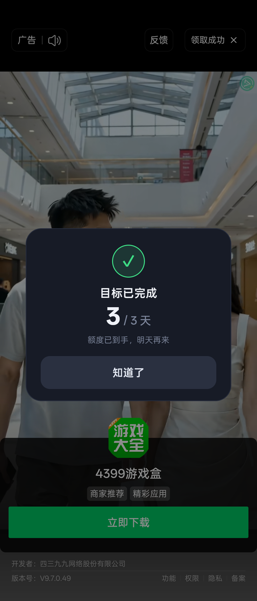

2 分钟看完完整操作
开启无障碍、设置目标天数、自动领取、结果反馈——全部是真机实录。 广告段已加速并做模糊处理，旁白为中文。
它只做一件事：把循环跑完
绝大部分时间在等。真正的动作只有四次点击，全部来自控件树里的精确坐标。
文案会变，用正则
全程只读不点
按框宽 42% 取点
奖励到账
直到达成目标天数
为什么用控件树，而不是认图认字
iOS 版只能靠 OCR，是因为它的点击是「注入事件」，且广告页控件树为空。
Android 这两点都不成立——无障碍能直接读到 WebView 里的 content-desc。
| OCR 方案（iOS 版做法） | 控件树方案（本项目） | |
|---|---|---|
| 原理 | 截图 → 识别文字 → 猜坐标 | 直接读无障碍树拿控件坐标 |
| 分辨率依赖 | 强，换机就要重调区域 | 无，坐标由系统提供 |
| 单次耗时 | 0.3 ~ 0.6 秒 | 毫秒级 |
| 主要失败原因 | 背景干扰、亮度变化、字体渲染 | 仅「文案改版」 |
| 调试方式 | 截图人眼比对 | dump 出全部 text / desc / bounds |
界面用 HTML 写，不需要电脑
AScript 提供 WebWindow（WebView 悬浮窗），JS 用
window.airscript.call('start','10') 把天数回传给 Python。
不想用界面就把 SHOW_UI 关掉。

六个坑，都是真机上撞出来的
这些在看文档时完全看不出来，只有实际跑起来才会暴露。
「领取成功」和「×」是同一个控件
desc 拼成 "领取成功，关闭，按钮"，右边约 1/3 是关闭按钮。
点控件中心会把广告关掉，不是领奖。
领取后不一定直接进下一条广告
经常弹「第N天畅听」进度面板挡住播放页。此时奖励已到账，但面板不关，下一轮就找不到入口。
desc 含「天畅听」就按 返回键 关掉每秒多次全量扫描会把进程拖死
第一版每秒 3~4 次 find_all() + XPath，脚本跑约 50 秒静默停止——没有报错、没有 Traceback。
原因是广告页 WebView 在倒计时期间持续刷新。
启动 App 后不能立刻查控件
实测启动后 20 毫秒查询必失败：无障碍此时读到的还是旧窗口，返回 0 个控件或桌面控件。
后台拉起 App 会被国产 ROM 拦
AScript 在后台时调不起目标 App，这是「后台弹出界面」权限限制，不是 API 用错。
硬编码日志路径换机就失效
主空间是 /storage/emulated/0，开了「应用分身」是 /storage/emulated/10。写死一处，别人装就废。
__file__ 反推 + 多级兜底探测三步跑起来
一台 Android 手机 + AScript App，不需要越狱、不需要外接硬件、不需要电脑端插件。
- 装 AScript 并授权 — 装好后开启无障碍服务和悬浮窗权限，否则一行都跑不动。
- 建工程并传代码 — AScript 会在手机上开 9096 端口的 Web 服务，浏览器访问即可管理工程。
- 运行并设置天数 — 弹卡片设好天数，点「开始领取」，剩下交给它。
# 手机 IP 在 AScript → 开发者选项 里查看 BASE="http://192.168.1.20:9096" DIR="/storage/emulated/0/airscript/model/qishui" # 1. 建工程 curl "$BASE/api/model/create?name=qishui" # 2. 传三个文件 curl -X POST -F "data=@__init__.py" "$BASE/api/file/upload?path=$DIR/__init__.py" curl -X POST -F "data=@res/ui/panel.html" "$BASE/api/file/upload?path=$DIR/res/ui/panel.html" curl -X POST -F "data=@res/ui/result.html" "$BASE/api/file/upload?path=$DIR/res/ui/result.html"
# 电脑上（需要 Node.js 18+）：启动并实时打印日志 node run.js 192.168.1.20 # 停止 node run.js 192.168.1.20 stop # 或者手机上直接：AScript → 小程序 → qishui → 运行
# __init__.py 顶部，改成 True 跑一次 SELFTEST = True # 探针会把当前界面所有控件的 text / desc / 坐标打到日志 # 照着日志改下面这些常量即可，不用盲猜 ENTRY_PATTERN = ".*免费听.*" REWARD_DESC = "领取奖励" CLAIM_DESC_KEY = "领取成功"
请先读完这段再动手
- 违反平台用户协议。自动化刷广告可能被清空已获时长、限制功能甚至封号。
- 行为特征很明显。固定节奏、连续几十轮、零交互——不存在「不会被发现」的技术。
- 一定会失效。App 改文案或改版就要重调，这是常态不是意外。本项目只验证过一个机型和一个版本。
- 损伤设备。长期亮屏满负荷运行，屏幕老化和电池损耗是真实的。建议只用备用机。
- 无任何担保。代码按现状提供，作者不对使用后果负责。涉及 App 的商标与内容版权归其权利人所有。